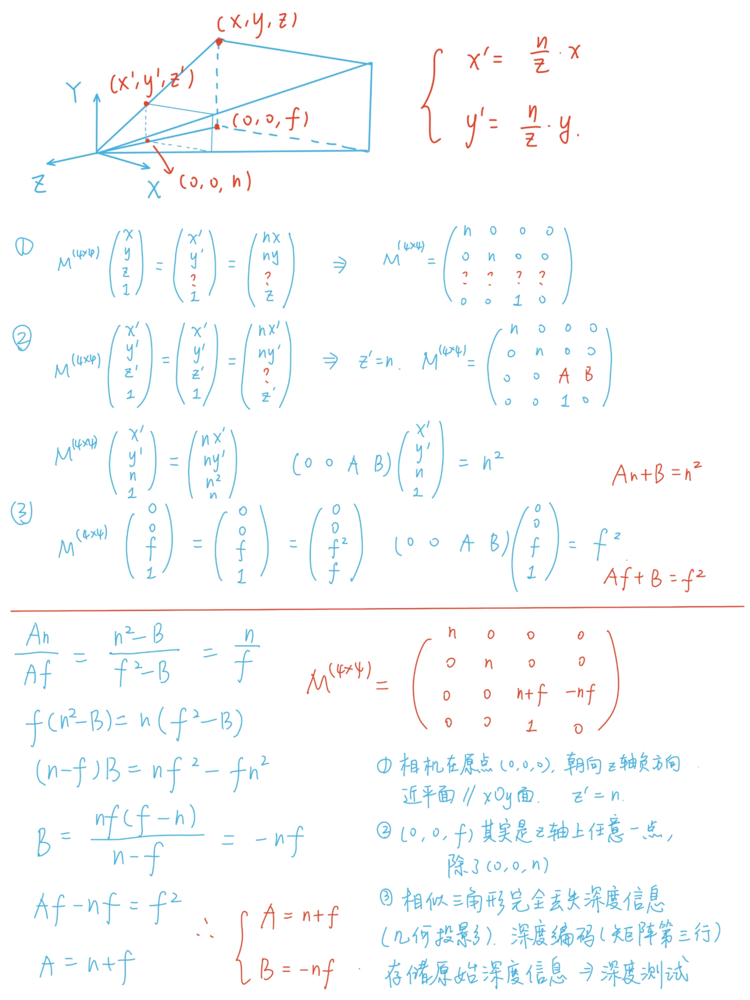

GAMES101-现代计算机图形学入门
📌 Homework1 ▼
1. 推导 视锥→立方体 变换矩阵

2. 构建模型矩阵 M
Eigen::Matrix4f get_model_matrix(float rotation_angle)
{
Eigen::Matrix4f model = Eigen::Matrix4f::Identity();
// TODO: Implement this function
// Create the model matrix for rotating the triangle around the Z axis.
float rad = rotation_angle * MY_PI / 180.0f;
float c = cos(rad);
float s = sin(rad);
Eigen::Matrix4f rotation;
rotation << c, -s, 0, 0, s, c, 0, 0, 0, 0, 1, 0, 0, 0, 0, 1;
model = rotation * model;
// Then return it.
return model;
}3. 构建透视投影矩阵 P
Eigen::Matrix4f get_projection_matrix(float eye_fov, float aspect_ratio,
float zNear, float zFar)
{
// Students will implement this function
Eigen::Matrix4f projection = Eigen::Matrix4f::Identity();
// TODO: Implement this function
// Create the projection matrix for the given parameters.
float n = -zNear;
float f = -zFar;
float t = std::tan(eye_fov / 2 * MY_PI / 180) * std::abs(n);
float b = -t;
float r = t * aspect_ratio;
float l = -r;
Eigen::Matrix4f scale;
scale << 2/(r-l), 0, 0, 0, 0, 2/(t-b), 0, 0, 0, 0, 2/(n-f), 0, 0, 0, 0, 1;
Eigen::Matrix4f translate;
translate << 1, 0, 0, -(r+l)/2, 0, 1, 0, -(t+b)/2, 0, 0, 1, -(n+f)/2, 0, 0, 0, 1;
Eigen::Matrix4f ortho;
ortho = scale * translate;
Eigen::Matrix4f persp2ortho;
persp2ortho << n, 0, 0, 0, 0, n, 0, 0, 0, 0, n + f, -n * f, 0, 0, 1, 0;
projection = ortho * persp2ortho;
// Then return it.
return projection;
}